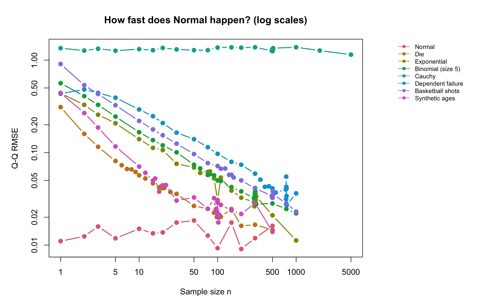
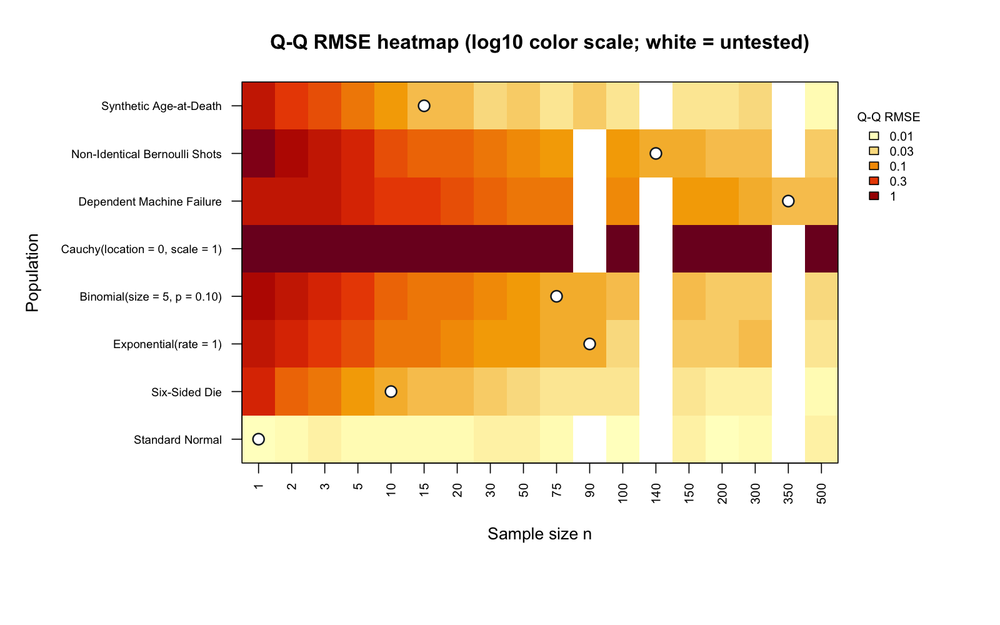

| Population | Selected n | Why I accept | Why not smaller | Issue / surprise |
|---|---|---|---|---|
| Standard Normal | 1 | Exactly Normal for every positive n; simulated shape and SE validate the implementation. | No smaller positive sample size exists. | Exact Normality is theoretical, not a Monte Carlo discovery. |
| Six-Sided Die | 10 | Symmetric bell shape, modest short-tail discrepancy and correct SE; both seeds give Q-Q RMSE about 0.057. | At n=5 the short-tail mismatch is clearer; 6-9 are borderline with coarser steps. I use 10 as the first convincing compromise, not proof that 9 fails. | Discrete means can be approximately Normal without losing Q-Q steps. |
| Exponential(rate = 1) | 90 | Bell-shaped central mass with modest right skew; both seeds give Q-Q RMSE about 0.053-0.054 and SE agrees with theory. | At n=30-60 right-tail bending is clearer; 75-80 are borderline and less consistent across seeds. 90 is a compromise, not a sharp threshold. | Good central approximation does not guarantee accurate extreme tails. |
| Binomial(size = 5, p = 0.10) | 75 | Modest skew and broadly linear Q-Q plot apart from steps; Q-Q RMSE about 0.057-0.060 across seeds and correct SE. | At n=20-50 skew and steps are clearer; 60 remains borderline with Q-Q RMSE about 0.067 in both seeds. I do not require steps to disappear. | Binomial size=5 is a population parameter, not sample size n. |
| Cauchy(location = 0, scale = 1) | N/A | No finite selection: iid standard Cauchy averages remain standard Cauchy. | Increasing n cannot repair the missing finite mean and variance; the ordinary CLT does not apply. | Not merely slow: no Normal convergence. Tested through n=5000. |
| Dependent Machine Failure | 350 | Bell-shaped empirical mean distribution with modest right skew; Q-Q RMSE about 0.049-0.051 across seeds and comparable larger neighbors. | At n=100-200 curvature is clearer; 300 is borderline with more skew. 350 is an empirical compromise, not a proved dependent CLT. | No iid theoretical SE; covariance matters. Exact boundary and asymptotic behavior remain uncertain. |
| Non-Identical Bernoulli Shots | 140 | Small skew; the main departure is fine discrete steps. Q-Q RMSE about 0.057-0.061 across seeds; SE matches the varying-probability formula. | At n=30-100 gaps are clearer; 110-125 are borderline with Q-Q RMSE about 0.064-0.067. 140 is my first convincing compromise. | Independent is not identically distributed; sum the individual Bernoulli variances. |
| Synthetic Age-at-Death | 15 | The irregular mixture has smoothed to a bell shape with modest left skew; Q-Q RMSE about 0.050-0.056 across seeds and correct SE. | At n=5-10 asymmetry is clearer; 12 is borderline with a stronger left-tail bend. 15 is acceptable, although larger n look better. | Synthetic, not historical mortality data; a complicated shape need not converge slowly. |
How Fast Does Normal Happen?
Thirty is a suggestion, not a universal law.
1 My answer
I investigated five required populations and all three extra-credit processes, with B = 10,000 separate samples at each n. Normal means are exact at n = 1. The die and synthetic mixture smooth quickly; skew, discrete gaps and dependence require more observations. Cauchy never converges to Normal in this experiment’s iid setting.
My standard is a useful central-shape approximation, not exact Normality or extreme-tail accuracy. I combine histograms, Q-Q plots, numerical diagnostics, valid theory and nearby larger values. Borderline neighbors mean there is uncertainty about the exact smallest integer.
Download the complete, self-contained submission PDF
2 Assumptions and numerical evidence
| Population | Independent | Identical | Finite variance | Skewness | Excess kurtosis | Q-Q RMSE | Empirical SE | Theoretical SE |
|---|---|---|---|---|---|---|---|---|
| Standard Normal | TRUE | TRUE | TRUE | 0.003 | -0.022 | 0.011 | 1.001 | 1.000 |
| Six-Sided Die | TRUE | TRUE | TRUE | 0.000 | -0.146 | 0.057 | 0.539 | 0.540 |
| Exponential(rate = 1) | TRUE | TRUE | TRUE | 0.214 | 0.032 | 0.053 | 0.106 | 0.105 |
| Binomial(size = 5, p = 0.10) | TRUE | TRUE | TRUE | 0.109 | 0.050 | 0.057 | 0.077 | 0.077 |
| Cauchy(location = 0, scale = 1) | TRUE | TRUE | FALSE | N/A | N/A | N/A | N/A | N/A |
| Dependent Machine Failure | FALSE | FALSE | TRUE | 0.208 | 0.097 | 0.051 | 0.115 | N/A |
| Non-Identical Bernoulli Shots | TRUE | FALSE | TRUE | -0.052 | -0.039 | 0.057 | 0.038 | 0.037 |
| Synthetic Age-at-Death | TRUE | TRUE | TRUE | -0.191 | -0.039 | 0.050 | 7.128 | 7.135 |
N/A for Cauchy means no finite selection and no valid population moment targets. Dependence has finite individual second moments but no supplied theoretical mean or SE for this nonstationary-start process; a dependent CLT is not established here.
3 Two views of convergence


4 What I take from this
The surprising contrast is that a complicated synthetic population can smooth faster than a simple skewed distribution. Discrete steps are not automatically a failure. Matching a mean and SE does not establish a Normal shape. Dependence changes variance reasoning; non-identical independent shots need individual variances. Heavy tails can invalidate the ordinary CLT altogether.
Each separate investigation includes population shape or process behavior, retrospective theory expectation, important code explanations, boundary plots and both-seed diagnostics. The expectation is not presented as a personal prediction made before the original simulations.
5 Reproducibility and AI
The seed is 7616, with fixed sensitivity seed 7617. Methodology, AI log, README and original instructor references document the workflow. Judgment inputs live in results/decisions.csv; scripts/finalize_summary.R validates boundary evidence and copies generated diagnostics into the summary. It does not infer normality from a single test or metric.